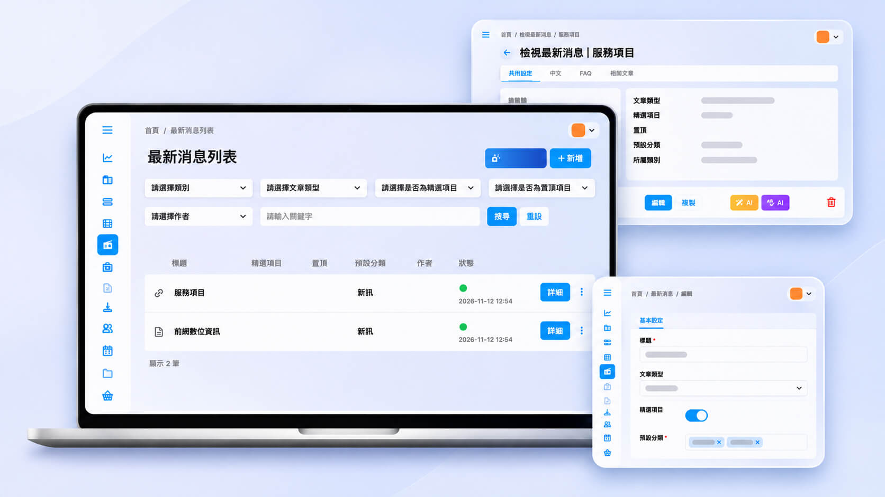
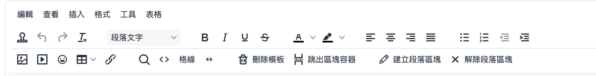

Overview
我參與公司的 SaaS 後台管理系統重構與 UI/UX 設計，將原本依賴外購版型的後台改為團隊可自行維護與擴充的系統，並參與 Rails 7 和 Vite 的升級。
我設計並實作共用樣式編譯流程，也親自設計與實作 TinyMCE 的內容模板、跳出容器和刪除模板功能。完成後，這套架構成為公司後續客製化新專案的共用基底。

專案問題
- 外購後台版型不易客製，樣式與結構難以維護。
- 富文本編輯器中的排版與網站前台呈現不一致，需要額外調整樣式。
- 舊有 CKEditor、Select2 等工具在相容性或操作上有問題。
- 新專案重複處理後台和編輯器樣式，難以累積共用做法。
專案目標
- 建立團隊能自行維護與客製的後台基礎。
- 讓編輯器和前台的樣式呈現更一致。
- 提供不需撰寫程式碼即可使用的內容模板與編輯輔助。
- 將可共用的架構整理成後續新專案的開案基底。
我的參與與實作
參與後台重構與工具鏈升級
我參與將後台改為團隊自行維護的版型，並參與升級至 Rails 7、以 Vite 取代 Webpack。
設計並實作共用樣式流程
我設計並實作以同一套 SCSS 維護前台內容樣式的流程，再由 Vite 編譯出 TinyMCE 使用的 CSS，讓編輯器盡量按照前台樣式呈現。
共用內容樣式SCSS
建置與編譯Vite
網站前台CSS
編輯器TinyMCE CSS
設計並實作 TinyMCE 編輯功能
我親自設計並實作常用內容模板、跳出複雜容器，以及移除內容模板的操作。
- 常用內容模板。
- 跳出複雜容器的操作。
- 移除內容模板的操作。
另外也設計並實作多主題切換、字體大小調整，以及自訂頭像上傳裁切等後台個人化功能。

成果
- 自 2025 年起，公司新客製化專案以這套後台基底開發。
- 共用 SCSS、Vite 與 TinyMCE 的樣式流程，以及可重用的編輯器功能，成為後續專案基底的一部分。